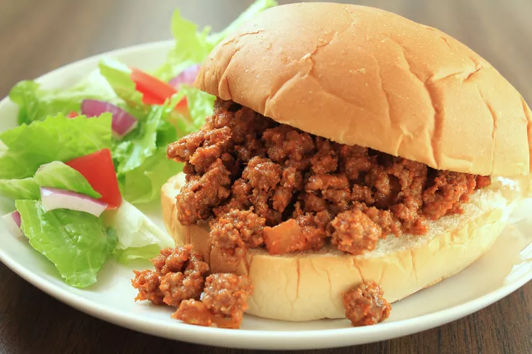

- Pretzels
- Butter
- Sugar
- Cream Cheese
- Whipped Cream
- Jello
- Frozen Strawberries
How to Make Strawberry Pretzel Salad
1. Make the pretzel crust, press into the bottom of a baking
dish, and bake
2. Make the cream cheese-whipped topping layer, then spread over
the crust.
3. Make the Jell-O, then stir in the frozen berries. Spread over
the cream cheese layer.
4. Refrigerate the strawberry pretzel salad until set.
Ingredients
- 2 cups chrushed pretezls
- ¾ cup butter, melted
- 3 tablespoons white sugar
- 1 (8 ounce) package cream cheese, softened
- 1 cup white sugar
- 1 (8 ounce) container frozen whipped topping, thawed
- 2 (3 ounce) packages strawberry flavored Jell-O
- 2 cups boiling water
- 2 (10 ounce) packages frozen strawberries
3. sloppy Joes

Prep Time: 5 Minutes Cook Time: 30 Minutes
Bake time: 25 Minutes Total Time: 35 Minutes
Equipment
- Large pot
- Colander
- Whisk
- 8-inch cast iron skillet or baking dish
Ingredients
- 1 pound lean ground beef
- ¼ cup chopped onion
- ¼ cup chopped green bell pepper
- ¾ cup ketchup, or to taste
- 1 tablespoon brown sugar, or to taste
- 1 teaspoon yellow mustard, or to taste
- ½ teaspoon garlic powder
- salt and ground black pepper to taste
- 6 hamburger buns, split
Directions
-
Heat a large skillet over medium heat. Cook and stir lean ground
beef in the hot skillet until some of the fat starts to render, 3
to 4 minutes. Add onion and bell pepper; continue to cook until
vegetables have softened and beef is cooked through, 3 to 5 more
minutes.
-
Stir in ketchup, brown sugar, mustard, and garlic powder; season
with salt and pepper. Reduce heat to low and simmer for 20 to 30
minutes.
-
Divide meat mixture evenly among hamburger buns.
- Bake until golden and bubbly, serve immediately, and enjoy!
Recipe Tip
If using ground beef with a higher fat content than lean, be sure to
drain any fat before starting Step 2.